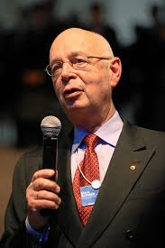

Revolusi 4.0
Revolusi Industri keempat mengintegrasikan teknologi digital, fisik, dan biologis. Konsep utama dalam era ini adalah Internet of Things (IoT), kecerdasan buatan (AI), big data, komputasi awan, dan sistem siber-fisik. Pabrik menjadi lebih cerdas dengan sistem otomatisasi berbasis data yang dapat mengambil keputusan secara mandiri dan real-time.
Perkembangan ini memungkinkan produksi yang lebih fleksibel, personalisasi produk, dan efisiensi energi yang lebih tinggi. Teknologi seperti blockchain, realitas virtual (VR), dan bioteknologi juga mulai berkembang pesat.
Orang Penting
